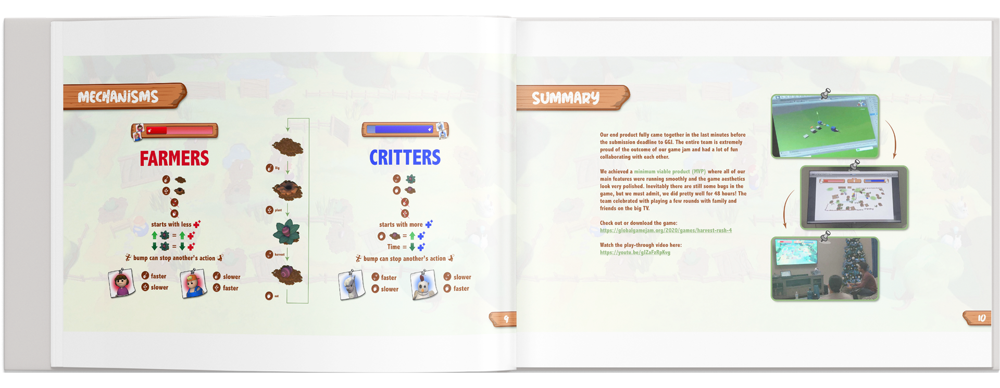

GLOBAL GAME JAM 2020
The Global Game Jam® (GGJ®) is the world's largest game creation event taking place in physical locations across the globe. Think of it as a 48 hour hackathon focused on game development around a theme.
This year's jam theme was: REPAIR.
HARVEST RUSH - OUR GAME
In this race against time, two teams compete over control over a farm. An unlikely pair of animals work together to eat crops while a mother and son try to frantically repair the damage. Will the critters eat enough before their health depletes? Will the farmers repair enough crops to survive the season? You only have 20 SECONDS, make it count!
GGJ Diversifiers are a voluntary set of game jam constraints. Here are the Diversifiers we tackled:
GAME DESIGN
Harvest Rush is a 2 vs. 2 couch multiplayer game designed for play on PC with DualShock controllers over Bluetooth.
I defined the majority of the game's mechanics including the players actionable features and the states of the farm plots. By clarifying each of the game parameters with the team and locking in our decisions early, this allowed the game programmers to plan out development of the game, prioritize, and distribute tasks over the course of the jam.
UX/UI DESIGN
I designed the UI architecture and created the UI assets for the game's interface. I initially white-boarded wireframes of the game's screen flow. Then, I worked with my teammates to streamline the number of screens to save time on development while retaining the same information the players would need to understand the game.

LIVE DEMONSTRATION
Indienomicon is a Central Florida indie developer community. For this year’s GGJ, Indienomicon hosted their monthly meet up event at Full Sail University’s Armada Fortress, one of the largest college e-sports arenas, to share each Central Florida GGJ’s team post postmortems and perform a live demonstration of their games.
I was proud to have been able to speak and present our game to a live audience with teammates Anthony and Brock. We received a great positive reaction to our team’s game (cheer battle included). Watch the presentation here.
POST-JAM DOCUMENTATION
I dedicated time after the game jam to compile a retrospective on the experience with takeaways discussed amongst our team. I challenged myself to represent the entire process of our game jam in a clear and concise manner.
REFLECTION
First and foremost, this game jam was FUN. This was my first experience in a formal 'jam' that was gaming-focused. I am very proud of my team to have delivered a very polished game in the short 48 hours we were allotted for the event. Due to the short time frame of the event, I had to make decisions quickly and continually think about how to streamline literally anything. It was a great learning experience to work with various talents and to sharpen my existing skills in a very different, but stimulating work environment.